Vasculitis
- Vasculitis = inflamed vessel walls → narrowing and clots (ischemia) or weakening (aneurysm, bleeding). Patients are systemically unwell (fever, weight loss, fatigue). Palpable, non-blanching purpura = vasculitis or a coagulopathy.
- Always rule out a secondary cause first, especially infection (hepatitis B and C, HIV, endocarditis), because immunosuppression for primary vasculitis would make it worse. Also drugs, cocaine/levamisole, cancer, lupus/RA/Sjögren's.
- Everyone with suspected vasculitis: CBC, creatinine, liver enzymes, ESR/CRP, urinalysis and chest x-ray (kidney and lung disease can be silent), infection screen, age-appropriate cancer screening, then an urgent rheumatology referral.
- Giant cell arteritis: only over 50; new headache, scalp tenderness, jaw claudication, PMR, vision loss (15–20%, painless, permanent). Draw ESR and CRP (both normal essentially rules it out), then start prednisone 1 mg/kg (max 60 mg) immediately; confirm with temporal artery biopsy (negative in 50–70%: skip lesions) or ultrasound halo sign within 1–2 weeks.
- ANCA vasculitis (GPA, MPA, EGPA): sinonasal disease, lung nodules or pulmonary hemorrhage, glomerulonephritis (RPGN), mononeuritis multiplex, purpura. c-ANCA/PR3 = GPA; p-ANCA/MPO = MPA, EGPA. Unstable or pulmonary-renal: admit; active urine sediment: urgent nephrology.
Learning Objectives
- Identify patients whose symptoms may be consistent with vasculitis.
- Describe the pathophysiology and presentation of giant cell arteritis.
- Categorize the other vasculitides and the clinical features that should put vasculitis at the top of the differential.
Three recordings (69 min) by Dr. Lillian Barra (rheumatology): introduction (with a purpura case), giant cell arteritis, and a primer on ANCA vasculitis; plus three interactive cases. Kawasaki disease and IgA vasculitis (HSP) are covered in pediatrics.
Introduction to Vasculitis
A 45-year-old man: 6 weeks of a painful, non-blanching rash on his legs, fatigue, swollen ankles.
What Vasculitis Is
Immune cells infiltrate the vessel wall, which thickens and narrows the lumen → turbulent flow, thrombosis, occlusion → ischemia. Or the damaged wall weakens → aneurysm → rupture and bleeding. Most vasculitis is systemic: fever, weight loss, fatigue, tachycardia, diffuse aches. It can hit any organ, and some types are uniformly fatal if untreated.
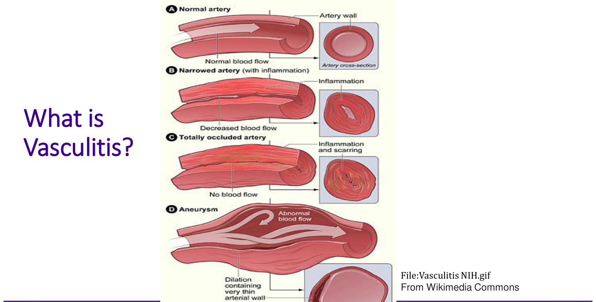
Narrowing, occlusion, aneurysm. NIH, via the deck.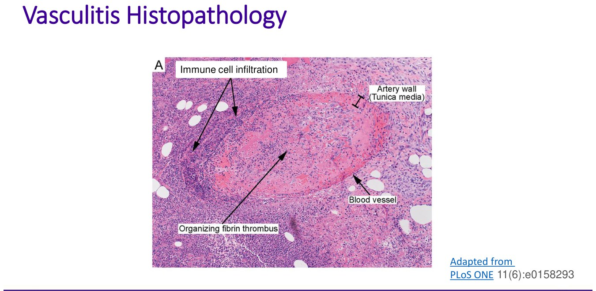
Immune cells in the wall, thrombus in the lumen. PLoS ONE 2016, via the deck.Secondary vs Primary, and Vessel Size
| Secondary (a cause you can find) | Examples |
|---|---|
| Infection (rule out first) | Hepatitis B and C, HIV, other viruses (maybe COVID-19); meningococcus, mycobacteria, S. aureus; fungi (can also mimic vasculitis) |
| Drugs and toxins | Hypersensitivity to antibiotics, some antihypertensives, antithyroid drugs; cocaine and its cutting agent levamisole |
| Cancer | Hematologic malignancy, paraneoplastic |
| Connective tissue disease | Lupus, rheumatoid arthritis, Sjögren's |
Primary vasculitis (cause unknown, autoimmune): over 20 types, classified by the size of vessel involved, which decides the symptoms.
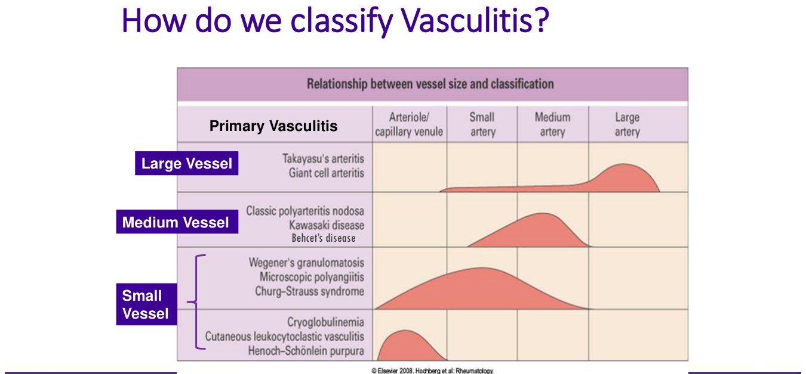
| Size | Types to know |
|---|---|
| Large | Giant cell arteritis (the most common adult vasculitis), Takayasu |
| Medium | Polyarteritis nodosa, Kawasaki (children), Behçet's |
| Small | ANCA vasculitis (GPA, MPA, EGPA), cryoglobulinemic vasculitis, cutaneous leukocytoclastic vasculitis (case 1's purpura; alone or part of others), IgA vasculitis / HSP (children) |
When to Suspect It and How to Work It Up
It's hard: rare (ANCA vasculitis about 20 per million), variable between patients, can grumble for years with only fatigue and pain, mimics common diseases, and has secondary causes.
| Suspect primary vasculitis when… |
|---|
| Chronically unwell with fevers, chills, weight loss |
| Symptoms in multiple organ systems; purpura |
| Very sick with multi-organ failure, especially pulmonary hemorrhage + renal dysfunction |
| And no underlying infection or malignancy found |
There's no single test; the clinical picture drives which investigations you order.
CBC (normocytic anemia, thrombocytosis), ESR/CRP, albumin (low = chronic), creatinine, liver enzymes. Inflammatory markers are nonspecific.
Urinalysis (blood and protein = glomerulonephritis) and chest x-ray (nodules) in everyone.
WBC; blood and urine cultures (sputum for fungi and AFB if lungs involved); hepatitis B and C, HIV, syphilis; cryoglobulins and complement with hepatitis C; age-appropriate cancer screening + SPEP (myeloma).
A biopsy of involved tissue clinches it (secondary causes still need excluding). Urgent rheumatology referral, plus other services by organ (nephrology for the kidney).
Case 1: purpura, ankle arthritis
45-year-old man, 6 weeks of painful non-blanching purpura below the knees, ankle arthritis with 2 hours of morning stiffness; past IV drug use, tattoos; ibuprofen 800 mg three times daily.
Initial tests: CBC, creatinine, ALT and albumin, INR and PTT (coagulopathy causes purpura), ESR or CRP, urinalysis, blood cultures, hepatitis B and C, HIV, a urine tox screen with consent (cocaine), chest x-ray, ankle x-rays. Not yet: urine culture (unless the urinalysis suggests infection), RF/ANCA, CT, and skin biopsy (not needed first, and not for non-ulcerating purpura of < 4–6 weeks, which often resolves).
Result: ALT 70, CRP 50, anti-HCV positive → HCV viral load and cryoglobulins. Hepatitis C causes vasculitis and arthritis directly or via cryoglobulins; first-line treatment is antivirals.
Symptom relief meanwhile: topical steroid (first line for non-severe cutaneous vasculitis), another NSAID (he got naproxen 500 mg twice daily + a PPI), colchicine 0.6 mg twice daily; oral steroids work but avoid if possible. Not acetaminophen (barely helps), cannabinoids (no evidence) or methotrexate (slow, and immunosuppressive and hepatotoxic in a hepatitis C patient). His rash and arthritis cleared after a month of HCV treatment.
Giant Cell Arteritis
A 75-year-old woman on hydrochlorothiazide: a new right temporal headache over a week, pain brushing her hair, jaw pain eating, weight loss; shoulder and hip morning stiffness for 2 months. Hb 99, ESR 70, CRP 50. Prednisone 50 mg: 100% better in 5 days.
What GCA Is
- A large-vessel vasculitis with a predilection for the cranial arteries, especially the temporal artery (“temporal arteritis” undersells it: it's systemic).
- Only over 50 (most over 70). The most common vasculitis in adults. Lifetime risk about 1% in women, 0.5% in men; commoner with northern European descent.
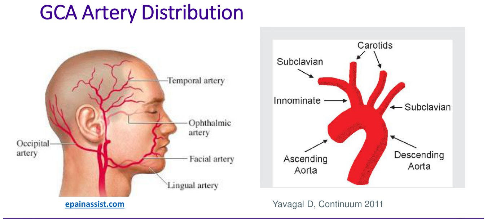
The arteries GCA likes: cranial branches, then the aorta and its branches. From the deck.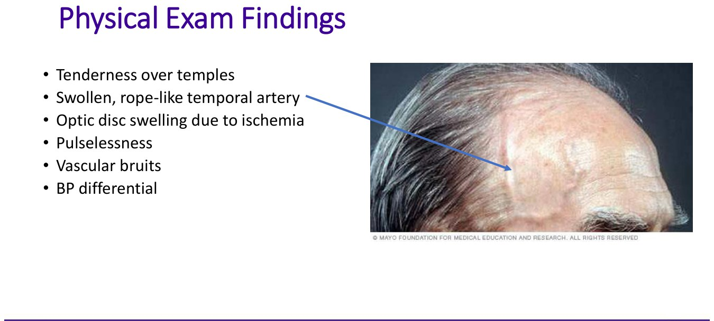
A swollen, rope-like temporal artery. From the deck.| Artery | Symptom |
|---|---|
| Temporal | New headache, temporal and scalp tenderness |
| Facial | Jaw claudication |
| Lingual | Tongue claudication |
| Ophthalmic | Vision loss, diplopia |
| Intracranial (rare) | Stroke |
| Aorta and branches (subclavian, carotid) | Limb claudication, Raynaud's, digital ischemia, chest pain, aneurysm |
| Systemic | Fatigue, fever, weight loss; polymyalgia rheumatica (shoulder and hip girdle pain and morning stiffness) is the commonest extra-arterial feature; some get arthritis |
Exam: tender temples, swollen rope-like temporal artery with a weak pulse (bad atherosclerosis can mimic it), optic disc swelling, absent or unequal radial pulses, bruits (subclavian, carotid), a blood pressure difference between arms.
In 15–20%. Often transient first (amaurosis fugax: “a curtain” for seconds to minutes). Untreated, it goes on to total loss in that eye and then the other within days to months. It's painless (patients may not mention it) and permanent, which is why you treat on suspicion.
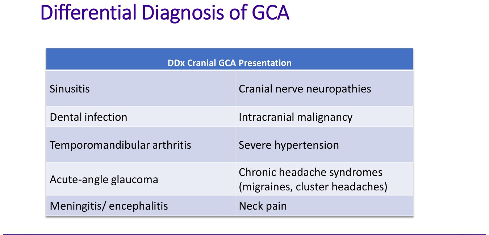
Diagnosing GCA
| Test | What to know |
|---|---|
| ESR and CRP, immediately | < 2% of GCA have both normal, so both normal essentially rules it out (if not on steroids) |
| Temporal artery biopsy (within 1–2 weeks) | Transmural inflammation + giant cells + fragmented internal elastic lamina = 100% specific. But 50–70% are negative (skip lesions), so a negative biopsy doesn't rule out GCA. Steroids raise false negatives over time. |
| Temporal artery Doppler ultrasound | Halo sign (wall edema): specificity > 85%, absent in ~30%; unreliable outside specialty centres |
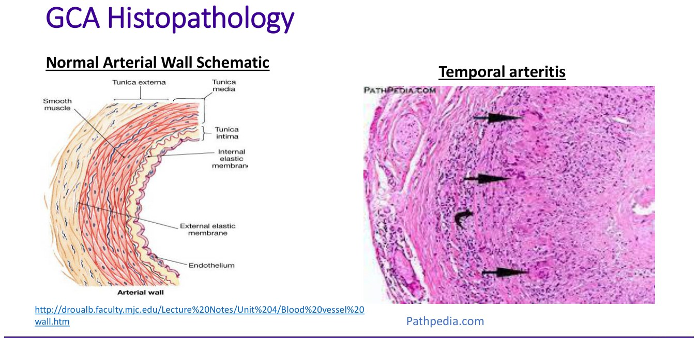
Temporal arteritis: giant cells (arrows) and transmural inflammation. Pathpedia, via the deck.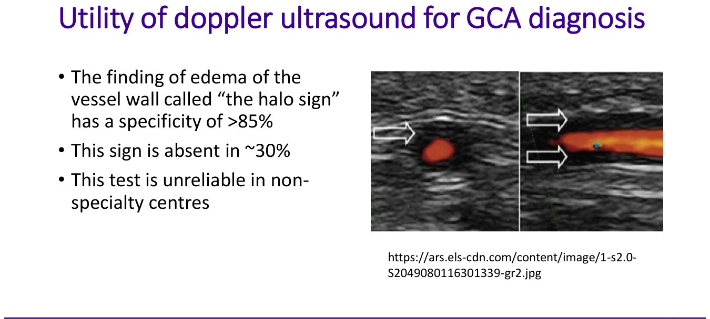
The halo sign. From the deck.Knowledge check: when to consider GCA
Yes: an 80-year-old with new headache, jaw claudication, weight loss, CRP 50 and a diagnostic biopsy; a 72-year-old with painless vision loss, bitemporal headache and CRP 65, even with a normal biopsy.
No: a 20-year-old (never under 50); burning temporal pain with vesicles (shingles); a 78-year-old with occipital headache, mechanical joint pains and normal ESR and CRP (degenerative).
Treating GCA
1 mg/kg/day, max 60 mg. Don't wait for results or the biopsy; if blood can't be drawn now, start anyway. Delay risks blindness and stroke.
PPI (gastritis, ulcers), calcium and vitamin D (fractures). The slides add a bisphosphonate; the knowledge check says it can wait until the diagnosis is confirmed.
Urgent ophthalmology or neurology.
Temporal artery biopsy (or ultrasound at a specialty centre) within 1–2 weeks; refer to rheumatology. Expect 80–100% improvement in 2–3 days; if not, rethink the diagnosis.
The module's case (65-year-old, 70 kg, new right headache, PMR symptoms): urgent labs at this visit (CBC, creatinine, ALT, ESR, CRP, urinalysis), urgent biopsy referral, prednisone 50 mg now (not 15 mg, not after results), calcium, vitamin D and a PPI, urgent rheumatology referral.
ANCA-Associated Vasculitis
The commonest small-vessel vasculitis: rare (20–30 per million), universally fatal untreated, and relapsing even when treated.
The Three Types and the ANCA Test
| Type | Old name | ANCA |
|---|---|---|
| Granulomatosis with polyangiitis (GPA) (commonest in Canada) | Wegener's | c-ANCA → anti-PR3 |
| Microscopic polyangiitis (MPA) | — | p-ANCA → anti-MPO |
| Eosinophilic granulomatosis with polyangiitis (EGPA) | Churg–Strauss | p-ANCA → anti-MPO |
ANCA = antibodies against granule proteins in neutrophils. Immunofluorescence shows the pattern (c = cytoplasmic, p = perinuclear) and detects a mix of antibodies; ELISA detects one antigen (PR3 or MPO) and is more specific for vasculitis.
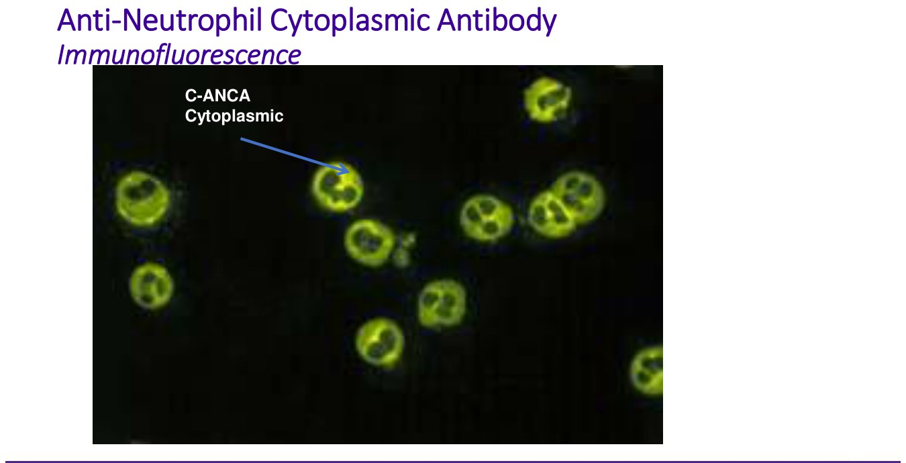
c-ANCA: the whole cytoplasm lights up (GPA). From the deck.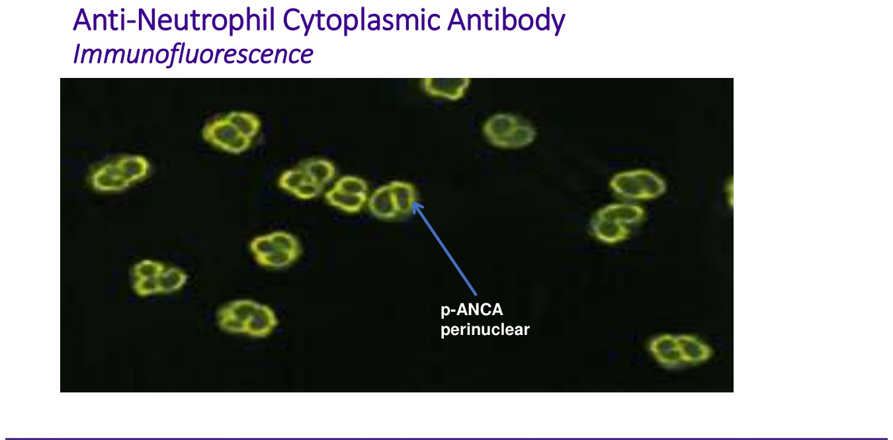
p-ANCA: a ring around the nucleus (MPA, EGPA). From the deck.| Interpreting ANCA | |
|---|---|
| False positives (5–10%) | Infection, especially infective endocarditis (can look just like GPA), cancer (lymphoproliferative), medications, cocaine |
| False negatives | Up to 30% of GPA and 50–60% of MPA/EGPA are ANCA negative: a negative test doesn't rule out vasculitis |
| Who orders it | Only if small-vessel vasculitis is suspected; usually the specialist (it isn't covered by OHIP). Reasonable for primary care if a specialist can't be seen quickly. |
Clinical Features
Described in every organ. The common ones:
| Site | Presentation |
|---|---|
| Sinonasal (commonest) | Bloody, crusty nasal discharge, sinus pain; can be erosive and destructive |
| Orbit | Retro-orbital mass: diplopia, vision loss |
| Lungs | Dyspnea; nodules (may cavitate); adult-onset severe asthma (EGPA); PE more common; pulmonary hemorrhage (a hallmark, high mortality) |
| Kidneys | Rising creatinine, hematuria and proteinuria; a cause of rapidly progressive glomerulonephritis |
| Joints, nerves | Inflammatory arthritis; mononeuritis multiplex (weakness, paresthesias) |
| Skin | Palpable purpura (commonest); urticarial vasculitis (lasts longer than hives, scars, non-blanching rim); ulcers (scarring, can lead to amputation) |
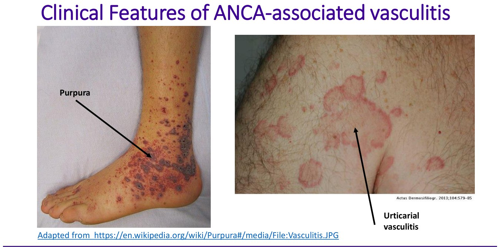
Purpura and urticarial vasculitis. From the deck.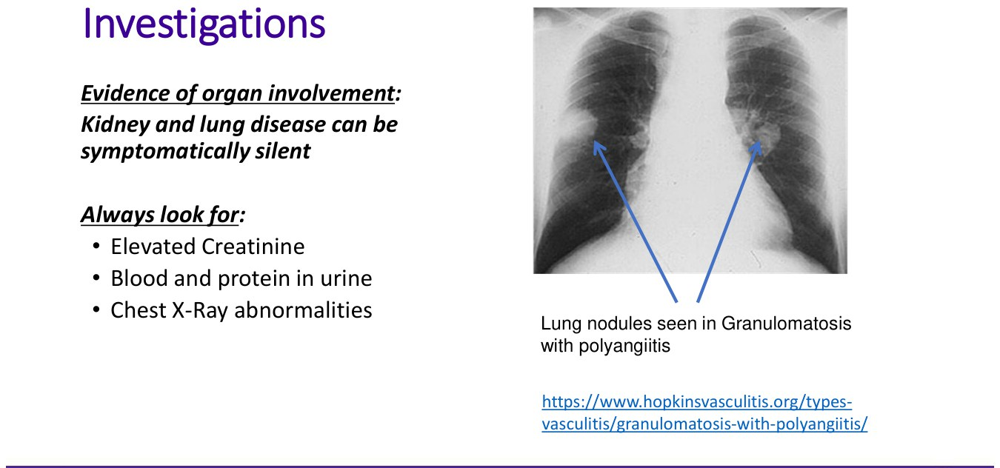
Lung nodules in GPA: kidney and lung disease can be silent. From the deck.Workup, Biopsy and First Steps
- Everyone: head-to-toe history and exam; CBC, creatinine, liver enzymes, ESR/CRP, urinalysis; chest x-ray; rule out infection (blood cultures, hepatitis, HIV); then organ-specific tests.
- Biopsy for single-organ disease: purpura or urticarial vasculitis → punch biopsy in primary care (histology, immunofluorescence, culture); ulcers → deep excisional biopsy by a surgeon (fungal infection, cancer); refer for orbital pseudotumour, sinonasal mass, lung nodule, lymph node, renal biopsy for an active sediment, sural nerve biopsy for neuropathy.
| If… | Then |
|---|---|
| Unstable vitals, pulmonary hemorrhage, significant dyspnea, or renal failure | Admit to hospital |
| Stable, active urine sediment, normal creatinine | Urgent nephrology (RPGN risk) and close monitoring |
| Otherwise | Urgent rheumatology + specialists for the organs involved |
Case: sinusitis that won't resolve
55-year-old woman (a PSW; travel to the Philippines): 2 months of sinusitis despite 2 antibiotic courses, crusting, epistaxis, ear fullness and hearing loss; new inflammatory polyarthritis; 10 kg weight loss. Hb 100, platelets 520, WBC 13, CRP 80.
Next tests: blood cultures, TB skin test (travel), HIV, urinalysis and chest x-ray, RF/anti-CCP and ANA, and a sinonasal biopsy (exclude fungal and TB infection before immunosuppression). Not sputum cultures (low yield) or an MRI head; CT chest and PFTs only if the x-ray is normal; ENA and complement only if ANA positive; ANCA once infection is excluded.
Results: ANA, RF and anti-CCP negative; chest x-ray with multiple cavitary lesions; urine with blood and protein. Differential: GPA, TB, disseminated fungal infection, lymphoma or other cancer (lupus and rheumatoid vasculitis unlikely when ANA and RF are negative).
Next step: she's stable with a normal creatinine, so no admission, but call nephrology urgently, call ENT to expedite, and refer urgently to rheumatology and respirology. Don't start high-dose prednisone yet: infection is still possible.
Built from Dr. Lillian Barra's “Introduction to Vasculitis”, “Giant Cell Arteritis” and “A Primer on ANCA-Associated Vasculitis” decks, their three recordings and the module's interactive cases (purpura, GCA, ANCA). Notes: the GCA recording's captions give the lifetime risk as “1% of women and 45% of men”; the slide says 0.5% for men. The GCA slides list a bisphosphonate with the PPI and calcium/vitamin D, while the module's knowledge check says a bisphosphonate can wait until the diagnosis is confirmed; both are given above. The intro deck lists urine cultures among the infection workup; the purpura case says they're only needed if the urinalysis suggests infection.